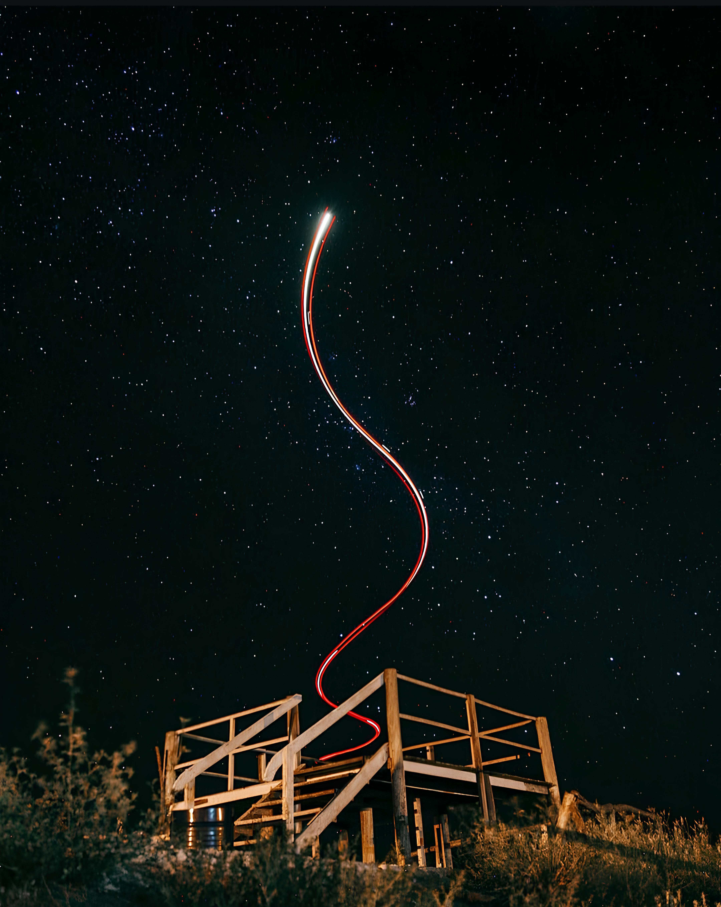
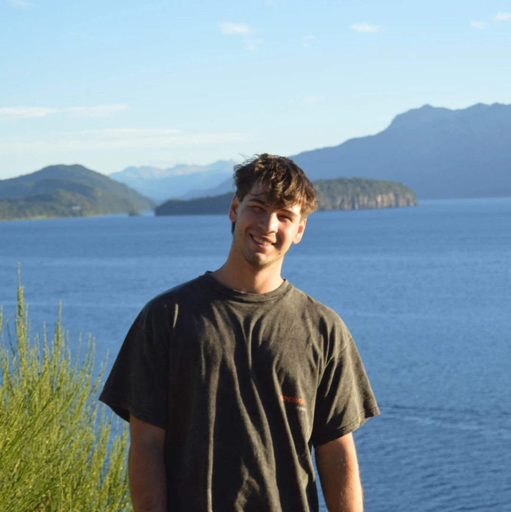

El tiempo en cada disparo
Siempre asociamos la fotografía con la captura de un instante estático. En este trabajo busqué ir más allá: capturar el movimiento, el paso del tiempo mismo.
Con apenas variar fracciones de segundo en la obturación, la percepción de la imagen cambia por completo. Es un recordatorio de que cada fracción de segundo tiene un sentido propio —aunque muchas veces sintamos que nada pasa, o que todo es aburrido.


Diseñador Industrial · Fotógrafo
Me formé como técnico electromecánico, un camino de ciencias exactas que aprendí a valorar. Pero con el tiempo entendí que me faltaba algo: la dimensión humana, el vínculo entre las cosas y las personas que las usan.
Eso me llevó al Diseño Industrial en la Universidad de Palermo. Rápido descubrí que diseñar es, antes que nada, comunicar. Y ahí fue donde la fotografía entró en escena: no como hobby, sino como herramienta. Una forma de ver con más intención, de observar el entorno y traducirlo en imágenes que digan algo.